Compact world cartograms
OWID is the compactness benchmark. Shared-footprint trials close many internal gaps without connector paths. Country shapes and borders still need work. No automatic replacement is approved.
The images show both country shapes and empty-space masks. Red marks enclosed empty space. Orange marks a disk-closing proxy at radius 8 tiles, including gaps open to the ocean. Real lakes, straits, bays, and island seas can also be marked. These are diagnostic masks, not a map of confirmed artificial holes.
Population scopes, country colours, and actual tile counts differ. Do not read this as a controlled population comparison. The original OWID file is unchanged. Its 54,978 rows occupy 54,967 distinct coordinates; eleven coordinates have both South Africa and Lesotho labels. The masks use occupied coordinates once.
| Layout | Occupied cells | Enclosed empty cells | Land-sea edges | Closing additions, radius 4 |
|---|
| OWID | 54,967 | 172 | 7,364 | 4,549 |
| Tutte partial fit | 53,017 | 1,020 | 9,154 | 5,045 |
| Separated shapes | 55,000 | 2,371 | 16,702 | 11,283 |
What border accuracy does OWID achieve?
On 203 matched source country IDs, OWID retains 248 of 311 source country-border pairs. It has 48 contacts absent from this source. The separated layout retains only 114 pairs, although it has no unsupported contacts. These are country-level checks, not component-level checks. Source records supply eight explicit code mappings, including French overseas departments; this does not create layout links between them. Different source boundaries can affect the comparison.
Thus zero unsupported contacts is not sufficient for a good map. Nor is a low gap score: the first strong sea-edge trial scores better than OWID on one closing measure but damages country shapes. See the country-contact comparison and mapping.
A separate direction check tests 7,496 axis relationships among 92 large countries. OWID has 210 reversals, Tutte has 1,368, and separated shapes have 157. This check omits small-country errors. It confirms that compactness and position must be assessed together: neither the rigid separated shapes nor the fixed Tutte positions are sufficient.
Shared-island shape correction
The latest local control restores eight small shared landmasses from their geographic outlines, including Borneo, Ireland, Hispaniola, and New Guinea. It translates each group as a whole. All other components stay unchanged. Exact country counts and connected components are retained; the component border totals remain 59 missing and 55 unsupported contacts.
Inspected the world, Europe, and Indonesia images. Borneo and Ireland have more geographic shapes. Their positions and low tile counts still limit detail. This does not fix Canada, Korea, Pakistan, or the mainland coast. The whole map is still not approved.
World · Indonesia · Europe · Settings and selected groups · Saved files
Stronger guides and fixed-footprint border changes
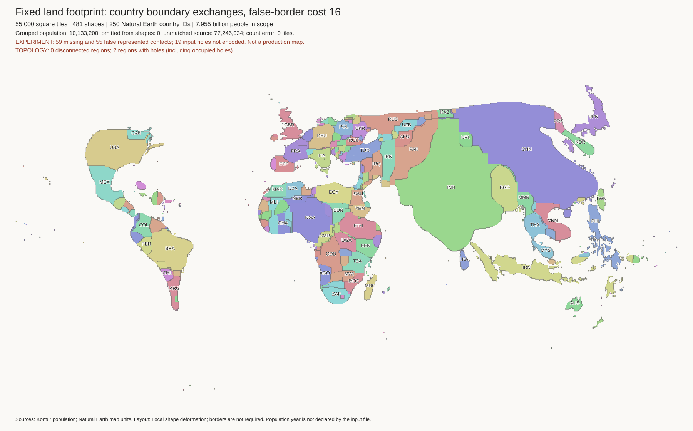
This control retains 266 of 311 matched country borders, with 39 unsupported contacts and 198 direction reversals. OWID has 248, 48, and 210 respectively. Counts are exact, all components are connected, and boundary changes leave the occupied footprint unchanged. See the matched comparison.
Not approved. Canada, Korea, and Pakistan still have poor shapes. Europe is more readable, but Italy is broad and Spain is rectangular. Shared islands such as Borneo lose shape detail. Two region holes remain, including occupied holes. Better aggregate scores do not establish better visual quality.
Europe · South Asia · Indonesia · Gap mask · Saved records
Remove isolated islands from the upstream flow
This control excludes 292 isolated components from the continuous solve, then restores their original tile budgets and intact templates. It retains components that have represented land borders, including shared islands. No country-ID links connect overseas parts. The external flow passes its convergence check, and its geometry has no overlap pairs.
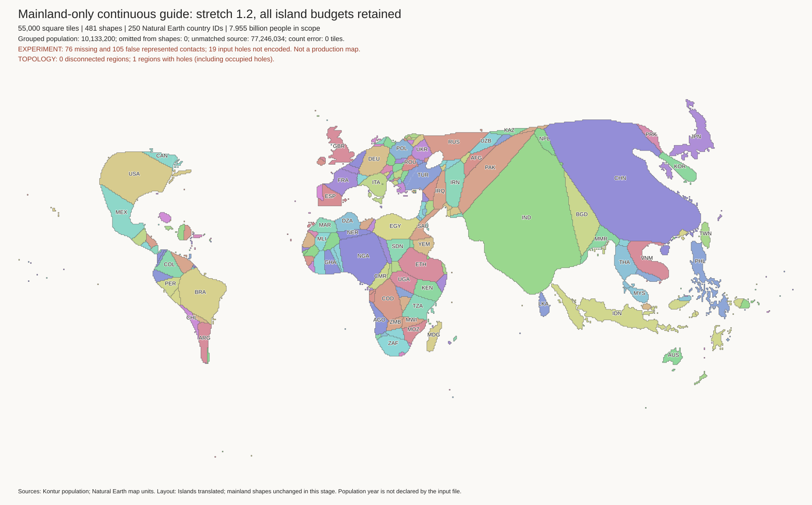
At stretch 1.2, the final world has exactly 55,000 tiles and no split regions. On the matched country scope it retains 249 of 311 borders, versus OWID's 248. However, it has 82 unsupported contacts versus 48, and 227 direction reversals versus 210. See the comparison. The slightly higher retained-border count is not evidence of a better map.
Not approved. North Africa is wider and Japan is farther north than in the full-flow control. Pakistan remains stretched, Korea extends from the wrong part of China, and Southeast Asia remains poor. One region has a hole. See Europe, Africa, Indonesia, and the saved records.
The stretch-1.5 control has no split regions or region holes, but makes China too flat again. It retains 240 matched borders and adds 85 unsupported contacts. Both shapes and borders still need work.
Stronger guides and a fixed-footprint border control
Guide weight 8 retains 256 matched borders, with 69 unsupported contacts and 198 direction reversals. It has exact counts, no split regions, and two region holes. The coast and Korea defects remain. The fixed-footprint control retains 251 borders, with 54 unsupported contacts and 236 direction reversals. It changes country boundaries but cannot open new gaps. Its internal borders become more angular, and China remains too flat.
Neither is approved. See the matched comparison, guide records, and fixed-footprint records. The combined control is shown above.
A separate shape-regularized mesh experiment now tests a different continuous footprint. Its first bounded-step guide has low weighted area error but still has thin features. It is not a selected replacement. See the continuous stages and rejected transformed-site layouts.
Earlier controls: population sites and mainland docking
Population-based country sites move Russia closer to Europe. This control has exact counts, no split regions, and no region holes. On the matched country scope it retains 241 of 311 borders, with 71 unsupported contacts; OWID retains 248, with 48 unsupported contacts. Direction reversals are 218 versus OWID's 210. See the country comparison. These checks do not prove good shapes.
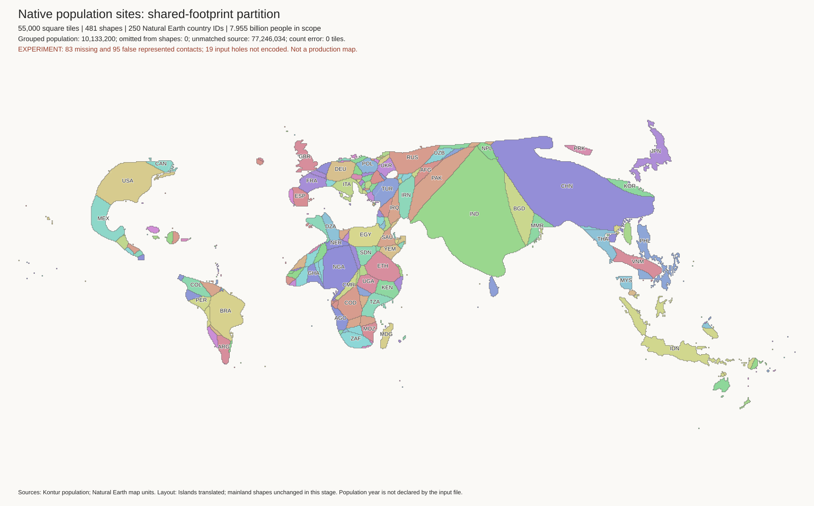
Not approved. North Korea is on a separate land piece. China is too flat, Pakistan is stretched, and North Africa is narrow. There are 308 enclosed empty cells and 7,416 land-sea edges. See Europe, South Asia, Indonesia, and the saved records.
A docking control translates whole mainland target pieces until they touch. It adds no path cells and does not connect overseas territories by country identity. A count-preserving coastal exchange removes Zimbabwe's last stray tile. The result has no split regions, but three region holes. It has 260 enclosed empty cells, 7,506 land-sea edges, 91 missing component contacts, and 109 unsupported contacts.
Docking connects the Americas and improves the Korea arrangement, but leaves an odd narrow feature on China's north coast. Africa is still narrow. It is not approved. See South Asia, Africa, and the saved records.
Rejected local corrections from the better flow start
Stronger source-outline fitting opens gaps and damages borders. A strong global coast penalty closes gaps but turns the USA and China into blocks. It has only 34 enclosed empty cells: a good gap score can still describe a bad map. Both directions are rejected.
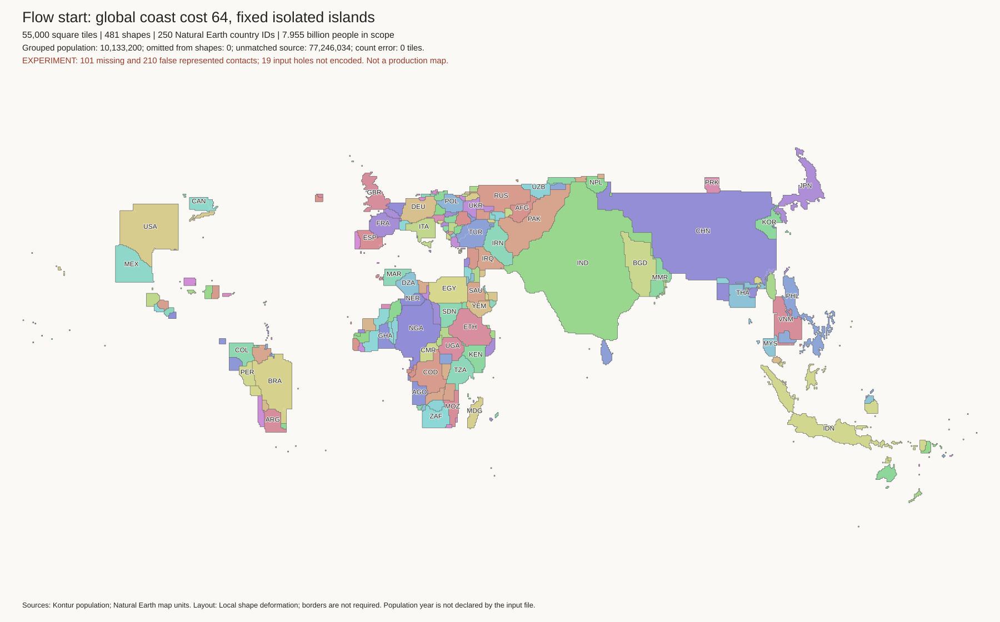
Earlier: connected regions on a shared flow footprint
This approach deforms the whole land footprint, then assigns country areas inside it. It does not force distant territories to touch. A repair swaps fragment cells or replaces them with compact growth of the main piece. Isolated island templates keep their shapes.
The 55,000-tile trial below has exact counts, no overlaps, and no disconnected components. It has 180 enclosed empty cells and 7,518 land-sea edges, compared with OWID's 172 and 7,364. Its radius-4 closing measure is 2,598 cells. These are gap proxies, not proof of a better map.
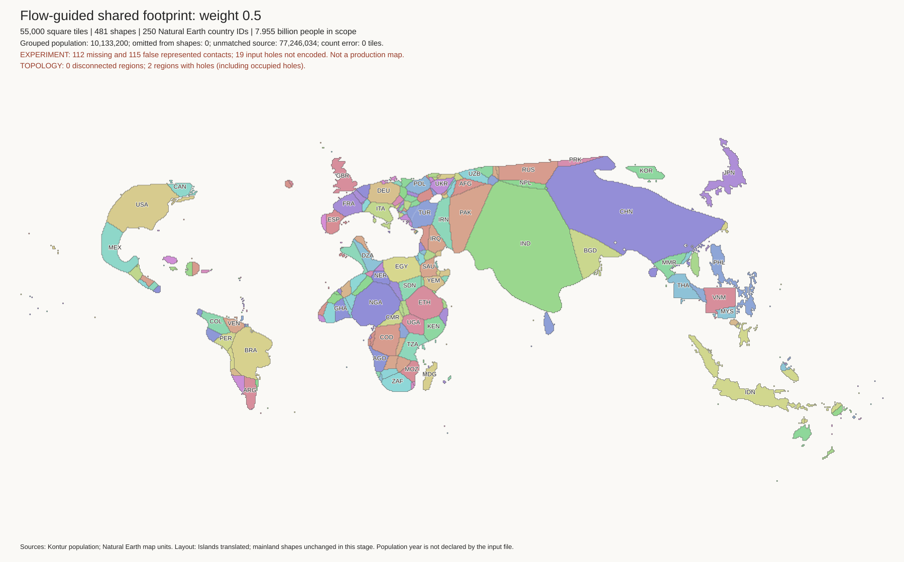
Not approved. Africa and North America are too narrow. Russia is too far east. South Korea is separated from North Korea. Southeast Asia has rectangular blocks. The layout loses 112 component contacts and adds 115 unsupported contacts. Two regions have holes, including holes occupied by other countries.
Europe · Africa · Indonesia · South Asia · Gap mask · Metrics · Settings and parent records · File hashes
This trial uses flow-guide weight 0.5. The zero-weight control also has exact counts and no split regions. It has 197 enclosed empty cells, 7,546 land-sea edges, 125 missing contacts, and 133 unsupported contacts. See its Europe detail and saved files. Neither trial retains enough geographic structure to replace OWID.
Connected resolution controls
A bounded coastal exchange removes the last split region at both resolutions. It keeps each component's tile count and does not add a path to the old fragment. The shapes and border errors remain poor. These are repairs, not approved replacements.
10,000-tile world · Indonesia · Saved records
110,000-tile world · Indonesia · Saved records
Earlier 10,000-tile resolution check
The same pipeline at lower resolution has exact counts but one split region. It uses a separate continuous-flow solve and zero flow-guide weight, so it is not only a resampled version of the image above.
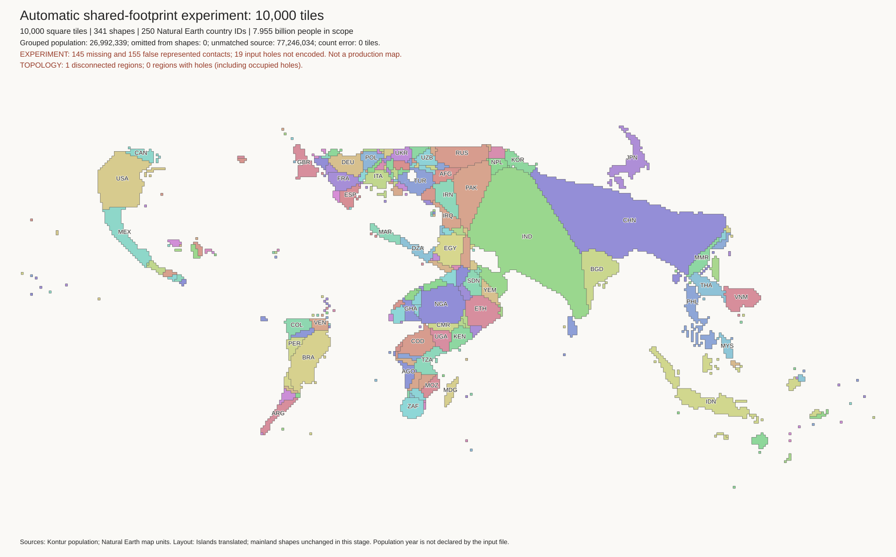
Indonesia detail · Pipeline record · File hashes · Independent checks of the saved controls
110,000-tile resolution check
This run completed with exact counts but one split region, 132 missing component contacts, and 153 unsupported contacts. More tiles add island detail; they do not correct the poor continent shapes.
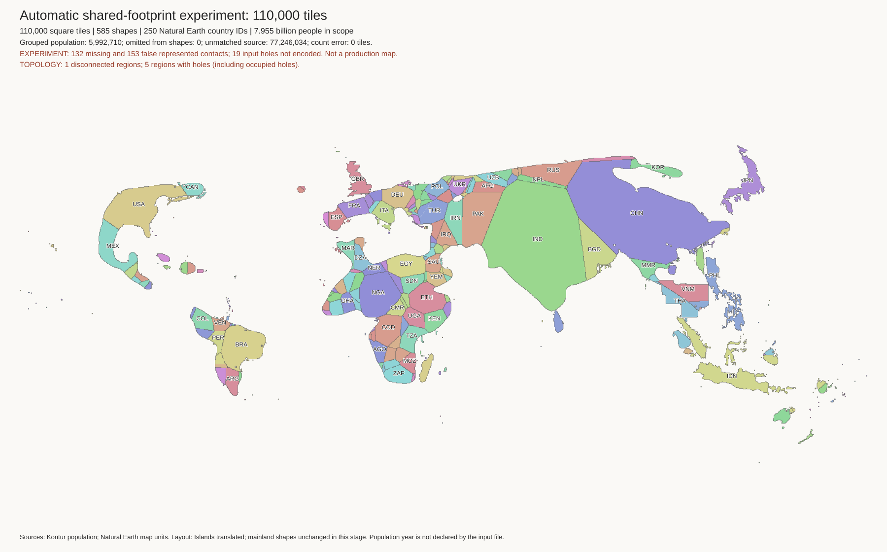
Europe · Indonesia · Africa · Pipeline record · File hashes
500,000-tile diagnostic: rejected
The external flow runs failed their area-convergence checks. This separate diagnostic uses the approximate geometry only as a footprint guide. It has exact final counts and no split regions after at most 100 strict swaps, followed by fragment relocation. This does not turn the failed external solve into a success.
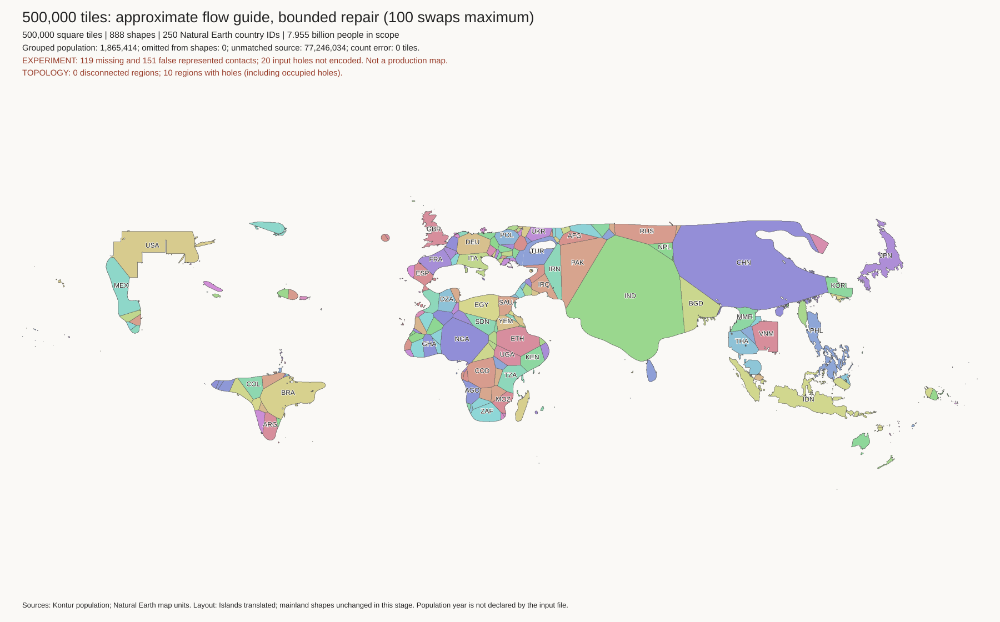
Not approved. The USA is rectangular, Canada is displaced, and the Americas are separate. China is too flat. There are 119 missing and 151 false component contacts, and ten region holes, including occupied holes. The gap mask counts real seas too: its large red Mediterranean area is not a confirmed artificial hole.
Indonesia · Europe · North America · Gap mask · Saved records
Earlier global partition: fewer small gaps, but invalid topology
This diagnostic assigns the full shared land footprint at once. It removes many thin paths and small gaps. It does not require countries to remain connected. These images are not valid replacements.
Compact Tutte footprint with geographic country sites
Europe is clearer than in the local-exchange results. Large-scale positions and the gap north of India remain poor. There are 45 disconnected regions, with 407 cells outside their largest connected pieces. A single global quota also permits country area to cross between landmasses.
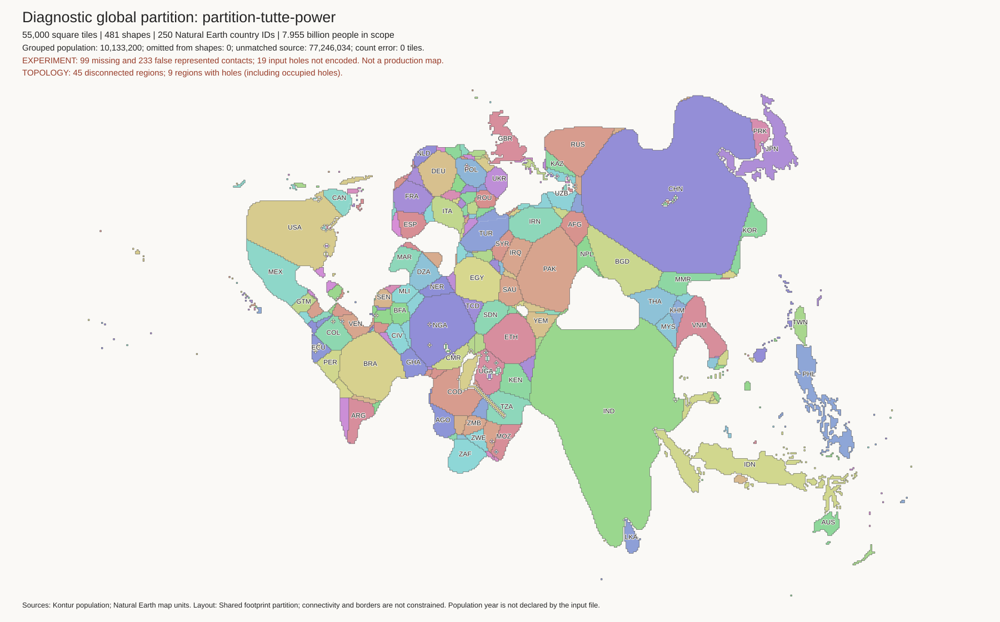
Europe detail · Indonesia detail · Gap mask · Solver record and limits · File hashes
Geographic footprint with outline costs
This closes many gaps, but leaves a large hole in Africa and splits 52 regions. It even assigns some US area to Europe. A new trial gives each connected source land-border group its own footprint and budget. This does not use country identity to connect overseas possessions.
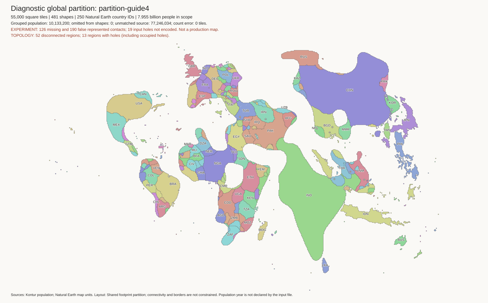
Africa detail · South Asia detail · Solver record and limits · File hashes
OWID benchmark
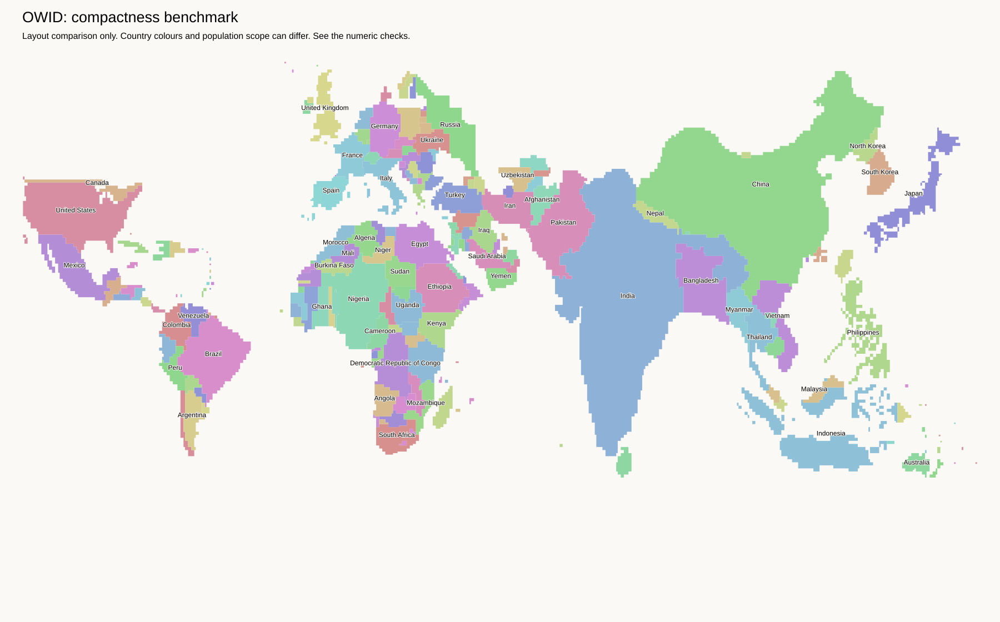
Empty-space mask
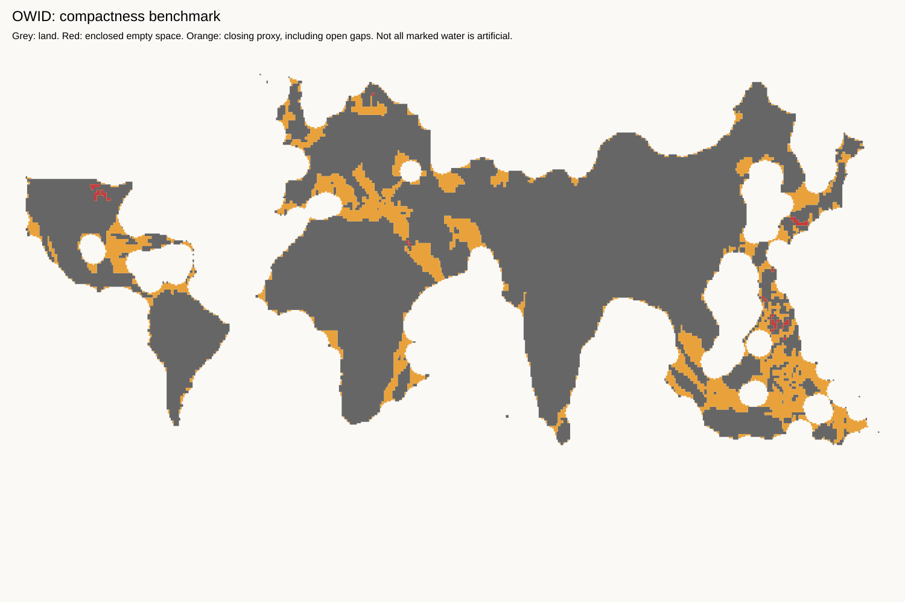
Measurements and source hashes
Tutte partial fit: starting point
All 348 represented source borders are retained. Absolute component budget error: 2,011 tiles. Thin paths and poor country positions still need correction.
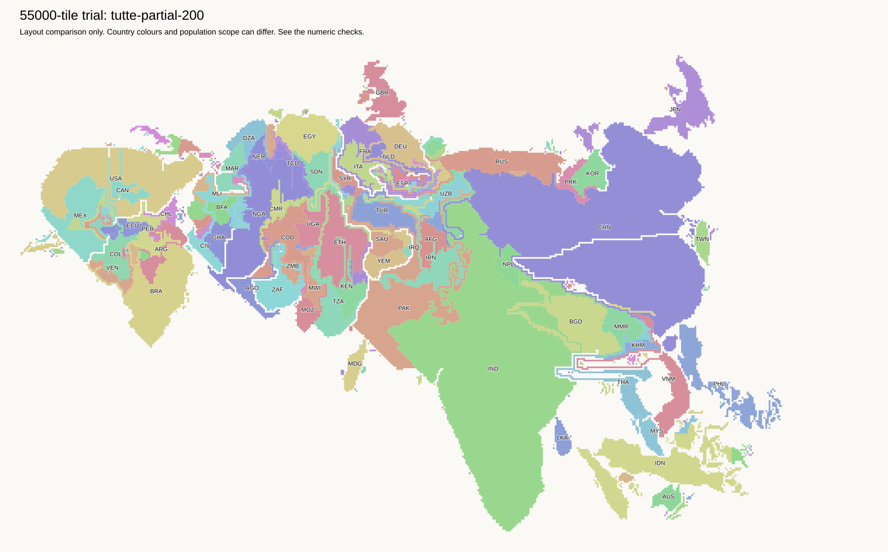
Empty-space mask
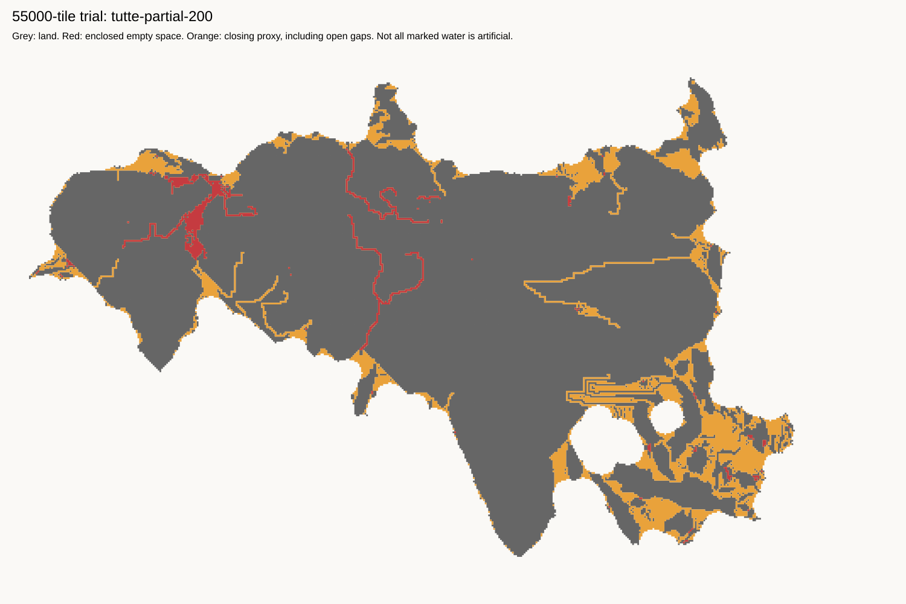
Measurements and source hashes
Separated shapes: rejected direction
Exact component counts and no added connector paths do not compensate for the large artificial spaces between countries.
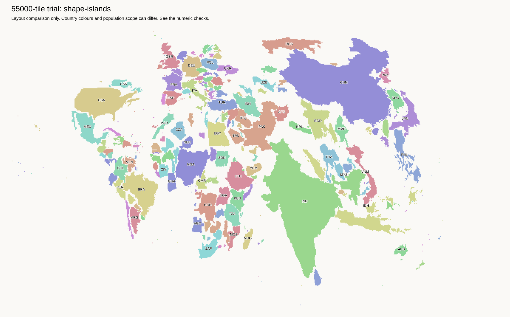
Empty-space mask
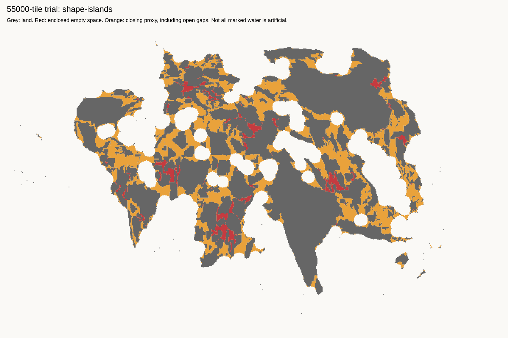
Measurements and source hashes
First joint-deformation trials: rejected
The first unmasked sea-edge cost closes some gaps but turns Japan, Great Britain, and much of Indonesia into rectangular blocks. Thin paths remain in Europe. It also leaves a budget error of 1,585 tiles. Do not use this result.
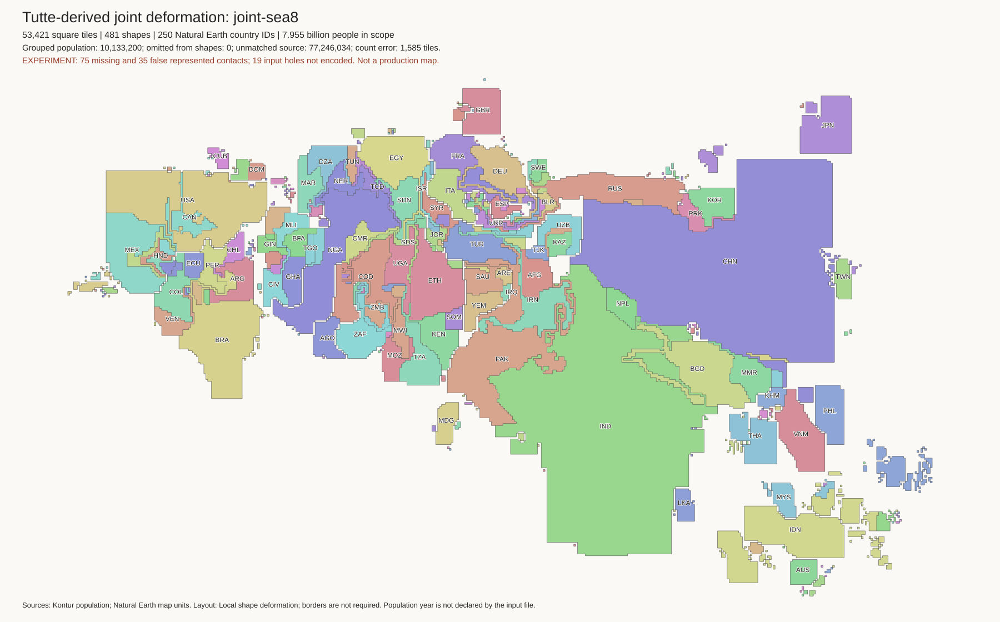
Europe detail · Indonesia detail · Gap mask · Metrics · Zero extra sea-edge cost control
Exact counts: still not sufficient
The corrected trials reach all 55,000 requested cells and preserve isolated island shapes. They still fail the visual target.
Tutte start with geographic guide centres
Reject this result. Germany surrounds Belgium; Portugal is in the Balkan group. Large cuts remain in China. There are 158 missing and 144 false component contacts.
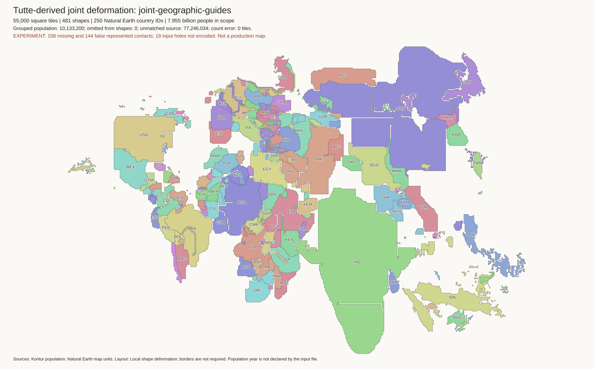
Europe detail · Gap mask · Saved file hashes · Fixed Tutte centres: also rejected
Geographic start with joint boundary changes
Reject this control too. Country positions are better, but gaps remain and some mainland shapes become rectangular. There are 209 missing and five false component contacts. Only 311 empty cells are enclosed, yet the radius-4 closing measure adds 7,993 cells. Most gaps remain open to the sea.
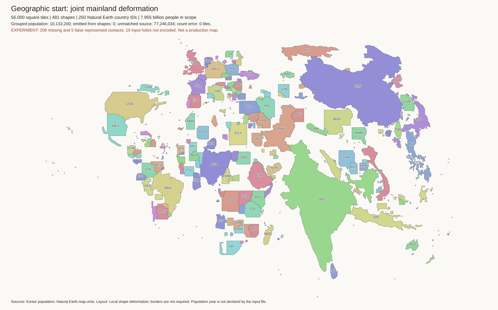
Gap mask · Saved file hashes
Next test: a shared target land footprint with exactly the movable land area. Filling internal gaps must replace land at the outer edge. Fixed island shapes remain outside this exchange. Both local footprint-cost trials are rejected: large gaps remain. The global partition diagnostics above test a different way to fill the footprint. The target footprint is not an approved coastline.
See the work log. The new deadline is 06:00 UTC on 15 October 2026. Production code and targets remain unchanged.